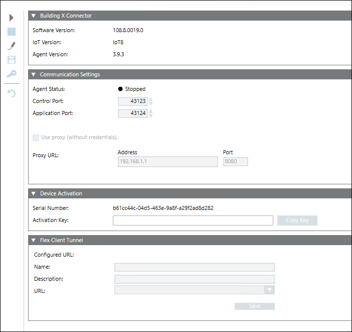

Workspace
The Building X Connector workspace appears in two locations: SMC and Management Station Workspace.
SMC Workspace

Field | Description |
Software Version | Software version for the Building X Connector |
IoT Version | Release version for the Building X Connector |
Agent Version | Siemens Building Connect Agent version |
Agent Status | Provides the status for the Building Connect Agent. |
Control Port | One of two local communication ports for communicating with the Building Connect Agent. |
Application Port | One of two local communication ports for communicating with the Building Connect Agent. |
Use proxy (without credentials) | Check box to enable configuration fields for unauthenticated (no authentication credentials required) proxy server. See next entry, "Proxy URL." |
Proxy URL | Address and port number for unauthenticated proxy server. Depending on setup, address can be an IP address (192.168.0.5), or a DNS-based address (proxy.example.com). Do not include the scheme ("http://"). |
Serial Number | A unique identifier for the Desigo CC server. |
Activation Key | A unique key needed to onboard Desigo CC to Building X. |
Configured URL | Displays the current configured URL in Building X. |
Name | The name of the Flex Client link that displays in Building X. |
Description | The description for the Flex Client link that displays in Building X. |
URL | The URL used to access the Flex Client from Building X. |
Management Station Workspace

Field | Description |
Software User | The software user account name created for the Building X Connector. This user account is used to determine the objects and events sent to Building X. All commanding done from Building X applications will be executed using the user account’s privileges. |
Building X Data State | Displays one of five states:
|
Discovery State | Displays one of five states:
|
Building X Preview | List of devices and points that are going to be uploaded to Building X for verification. The total devices and points are displayed in the heading above. Verify that the totals are accurate before you upload. |
Export | Creates a bundle of Desigo CC device and point data from the local management station for use during the discovery process. |
Discover | Discovers devices and points to be uploaded to BX and displays them in the Building X Preview expander. |
Upload | Uploads the discovered devices and points to Building X. |